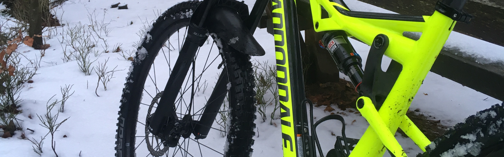

Triathlon ist ein fantastischer Sport, weil für jeden etwas dabei ist: Wer von euch ist nicht gern im Wasser oder radelt oder läuft durch die Gegend? Hier ist für jeden etwas dabei! Und das wichtigste: Man macht das, was Spaß macht mit anderen zusammen!
Die Triathlonabteilung des 1. FC Kaiserslautern möchte interessierte Jugendliche im Alter von 10 bis 17 Jahren zu einem Schnuppertraining einladen. Interessenten melden sich beim Jugendwart Chris unter: jugend@fck-triathlon.de
Siehe Trainingszeiten: Hier
Je nach Trainingseinheit: Rad&Helm mit wetterangepasster Kleidung, Laufsachen oder Schwimmsachen.